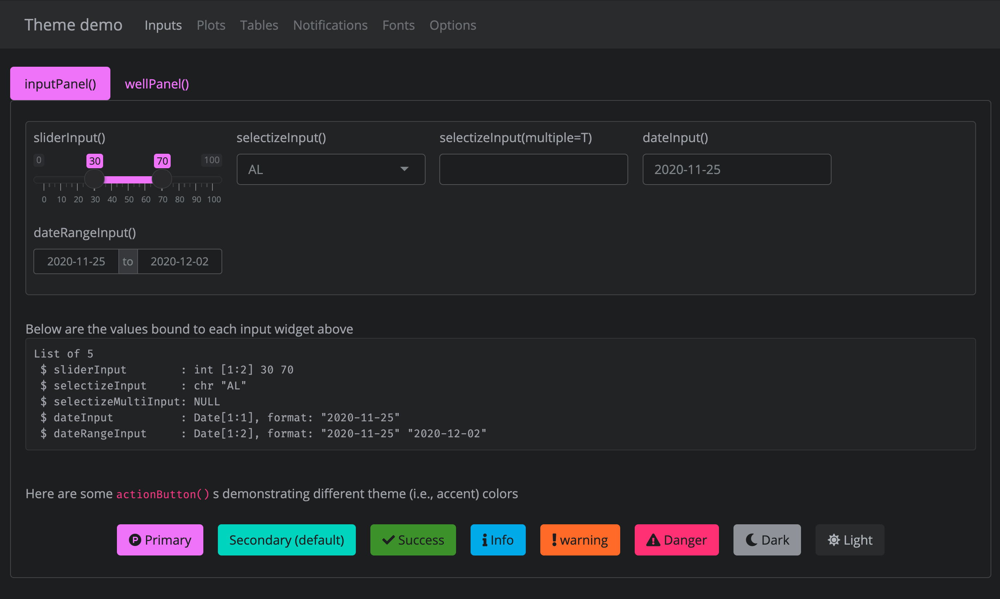
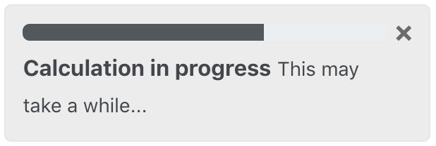
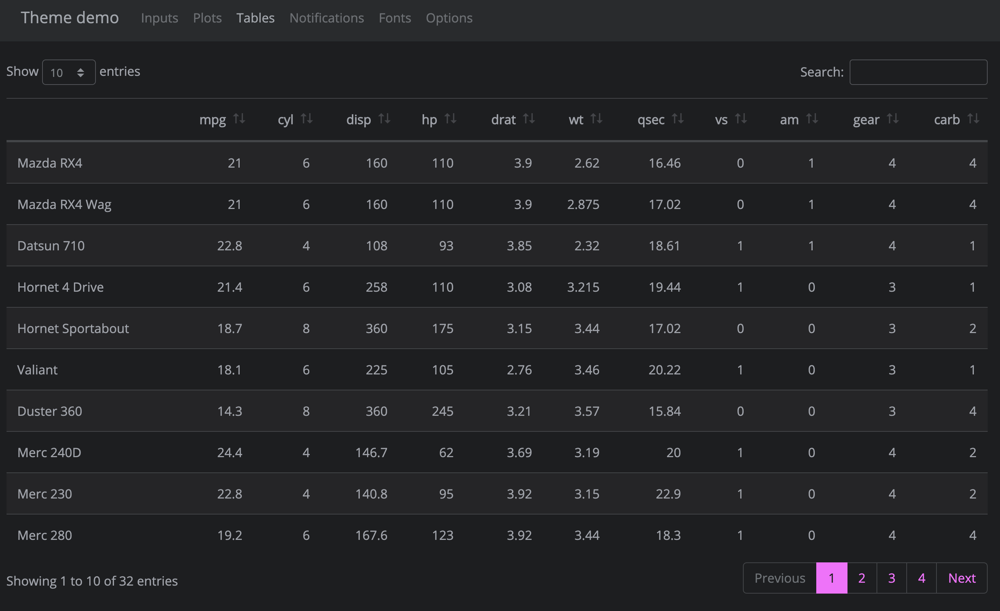

This article demonstrates how to create custom themes for Shiny apps, R Markdown documents, and more using bslib. For the sake of novelty, this article uses some Bootstrap 4 specific features like Utility Classes, but some of the more basic options like Main Colors & Fonts and Sass variables are also available for Bootstrap 3.
Main colors & fonts
bs_theme() makes it easy to customize the main colors and fonts of most Shiny apps and R Markdown documents. Any bs_theme() may be provided to any Shiny app and any R Markdown document powered by Bootstrap, but for sake of demonstration here we’ll provide it to bs_theme_preview(), which runs a Shiny app designed for previewing and customizing themes.
library(bslib)
material <- bs_theme(
bg = "#202123",
fg = "#B8BCC2",
primary = "#EA80FC",
secondary = "#00DAC6",
success = "#4F9B29",
info = "#28B3ED",
warning = "#FD7424",
danger = "#F7367E",
base_font = font_google("Open Sans"),
heading_font = font_google("Proza Libre"),
code_font = font_google("Fira Code")
)
bs_theme_preview(material, with_themer = FALSE)

Themes may also be interactively customized when with_themer = TRUE. This overlays bs_themer() on the demo app, an interactive theming tool to play with different colors, fonts, and various other main options. See here for a live demo, but note that when bs_themer() runs locally, it emits R code in the console to replicate the interactive changes.
Among the main coloring choices in bs_theme(), bg, fg, and primary are by far the most important as they effect nearly every color on the page. In fact, bg and fg alone impact 100s of defaults — everything from inputs to wells (e.g., shiny::wellPanel(), shiny::inputPanel(), etc) to navigation (e.g., shiny::navbarPage(), shiny::tabsetPanel(), etc) and more. The accent colors don’t impact nearly as much, but primary does control the color for some important things like hyperlinks, shiny::tabsetPanel() links, accent/focus colors for inputs, and more. That being said, other accent colors can be handy for customizing things like shiny::actionButton() (defaults to the secondary color), shiny::showNotification() , or more generally any HTML content that leverages Color Utility Classes.
There are 3 main controls for font families in bs_theme(), namely base_font, heading_font, and code_font. To focus and customize each setting, go to the “Fonts” tab in the top navbar, as well as in interactive themer. It’s worth noting that the interactive themer has a special ability to render Google Fonts in real-time by downloading, caching, and importing font file(s) as needed (via font_google()).
When choosing fonts, keep in mind that it’s generally good practice to put serif fonts in base_font, sans-serif fonts in heading_font, and monospace fonts in code_font. If you aren’t sure where to start, this article has a nice gallery of Google Font pairings.

When using web safe font combinations, it’s ok to provide a character string of (comma-separated) font families (e.g., bs_theme(base_font = '"Times New Roman", Times, serif'). Otherwise, use one of the font_google(), font_link(), and/or font_face() helpers to include the relevant file(s) so the client’s browser may render the font(s). font_link() and font_face() are fairly low-level interfaces to the CSS web font API, but font_google() has the additional ability to download and cache font file(s), making it so that an internet connection is needed only for the first time a particular font is used.
Sass variables
If you aren’t already familiar with how Sass and Sass variables work, we recommend reading this article before continuing.
Any of the main color and font settings work for any Bootstrap version, but bs_theme() also allows control over specific Bootstrap Sass variables that are likely to different across versions. Thus, it’s best practice to ‘lock-in’ the Bootstrap version when setting Sass variable(s) directly. Here we set Bootstrap 4’s $font-size-base variable to increase the sizing of all the fonts on a solarized theme.
theme_solar <- bs_theme(
bg = "#002B36",
fg = "#EEE8D5",
primary = "#2AA198",
base_font = font_google("Grandstander"),
version = 4,
"font-size-base" = "1.1rem"
)
bs_theme_preview(theme_solar, with_themer = FALSE)

If you skim through the full list of Bootstrap 4 (or 3) Sass variables, you’ll notice lots of variable settings. Towards the top are the main settings like the bg / fg color system and theme colors, but as you work your way down the file, you’ll notice variables becoming more and more specific. For example, $progress-bar-bg defaults to primary, but we can change that default directly, which will customize shiny::Progress:

This works because orange is a valid CSS color string, but what happens if we attempt to define $progress-bar-bg using other Bootstrap Sass variable(s)? For example, instead of orange, let’s set it to $gray-800 (that is, 80% fg and 20% bg).
#> Error: Undefined variable: "$gray-800"
This doesn’t work because bs_theme() places variable defaults before Bootstrap variable definitions; however, if we use bs_add_variables() with .where = "declarations", then the variable is placed after Bootstrap variables, making it possible to reference Bootstrap variables (just make sure the variable definition doesn’t include a !default flag)!
bs_theme("progress-bar-bg" = "$gray-800")$defaults
/* Sass */
$progress-bar-bg: $gray-800 !default;
@import "bootstrap/scss/_variables.scss";

Utility classes
Bootstrap 4 comes with a suite of handy utility classes for handling common yet fickle styling issues like spacing, borders, sizing, layout, colors, and more. In fact, if you look at the source for the theme demo app, the actionButton() logic makes use of the margin spacing (m-2) to add some spacing between the buttons (they also make use of button modifier classes to achieve their different background colors).
actionButton("primary", "Primary", icon("product-hunt"), class = "btn-primary m-2")
actionButton("secondary", "Secondary (default)", class = "m-2")
actionButton("success", "Success", icon("check"), class = "btn-success m-2")
It’s worth noting that actionButton(), like many other core shiny UI components, doesn’t actually have an explicit class argument, but it does route implicit arguments (i.e., ...) to it’s top-level HTML tag, which is why actionButton(..., class = "btn-primary") add the class in the appropriate place. Another place where this top-level class can be useful is for customizing the body of a tabPanel() .
By default, tabset panels don’t come with any padding or border(s) around the body’s content, which can make it appears though the content is just floating in space:

We can help solve this issue by adding some padding the tab’s content (p-3) as well as a nice border that matches up with the tab’s borders.
tab <- function(...) {
shiny::tabPanel(..., class = "p-3 border border-top-0 rounded-bottom")
}
tabsetPanel(
tab("One", "With padding"),
tab("Two", "Nice!")
)

And for tabsetPanel(type="pills") , it looks a bit better to have a full, rounded, border:
pill <- function(...) {
shiny::tabPanel(..., class = "p-3 border rounded")
}
tabsetPanel(
type = "pills",
pill("One", "With padding"),
pill("Two", "Nice!")
)

It’s also worth noting that you can also add these classes to rmarkdown tabsets, like so:


Unfortunately, we can’t generally rely on the class argument placing classes on the top-level HTML tag to achieve our styling goals and may need to target children of the top-level tag. For example, if we wanted to horizontally align a tabsetPanel(), we’d have to append a class to it’s first child (i.e., the .nav container).
tabsetPanelCentered <- function(...) {
x <- tabsetPanel(...)
x$children[[1]] <- tagAppendAttributes(
x$children[[1]], class = "justify-content-center"
)
x
}
tabsetPanelCentered(
type = "pills",
pill("One", "With padding"),
pill("Two", "Nice!")
)
Beware, however, that tabsetPanelCentered() makes very strong assumptions about the HTML structure of tabsetPanel() . It’d be better practice to leverage the power of Sass’s @extend rule to make all navs horizontally centered:
Or scoped to a specific tabsetPanel() ’s id:
Dynamic theming in Shiny
With Shiny, it’s possible to change the bslib theme after the initial page load via session$setCurrentTheme(). This can be useful for things like a dark mode switch for your Shiny app:
light <- bs_theme()
dark <- bs_theme(bg = "black", fg = "white", primary = "purple")
ui <- fluidPage(
theme = light,
div(
class = "custom-control custom-switch",
tags$input(
id = "dark_mode", type = "checkbox", class = "custom-control-input",
onclick = HTML("Shiny.setInputValue('dark_mode', document.getElementById('dark_mode').value);")
),
tags$label(
"Dark mode", `for` = "dark_mode", class = "custom-control-label"
)
)
)
server <- function(input, output, session) {
observe({
session$setCurrentTheme(
if (isTRUE(input$dark_mode)) dark else light
)
})
}
shinyApp(ui, server)

session$setCurrentTheme() “just works” for existing themeable components (e.g., “core” Shiny UI), but in order for it to work with custom components, the component’s CSS must come from a “dynamic” HTML dependency (i.e., bs_dependency_defer()). To learn more, see Custom components.
Themeable components
HTML components that “just work” well with bslib (i.e., their default styles derive from bs_theme() settings) currently includes:
At the moment, custom components (e.g., {shinyWidgets}, htmlwidgets, etc) aren’t necessarily themeable (via bslib); but fortunately, bslib provides the tools for making custom content themeable. Over time, we’re hoping package authors will leverage these tools to make their custom components themeable by default, but app authors can also leverage these tools to translate themes to whatever styling API they need.
Plots
bslib itself doesn’t do anything special to make static R plots respect Bootstrap CSS, but thanks to the {thematic} package, you can include thematic_shiny() in your Shiny apps and thematic_rmd() in your R Markdown documents to gain new, intelligent, styling defaults based on the bslib theme (BTW, thematic can also be used to theme plots without Bootstrap). Note that, the demo app included with bs_theme_preview() includes a call to thematic_shiny(font = "auto") to enable real-time theming of plots.
As you’ll see in the next section on Tables, with a bit of effort, it’s possible to translate bslib theme settings to other package’s theme setting today, but our hope is that with time and help from the R community, we’ll get most popular packages working well bslib .
Tables
For a preview of custom HTML tables that can derive their default styles from a bslib theme, navigate to the “Tables” tab of the demo app:

Custom components
A basic themeable component
Before going through a full-blown dynamically themeable custom component, let’s start from a relatively straight-forward example of implementing a custom person() component. Say we have the following R function to generate some HTML with classes that we’ll write custom Sass/CSS styles for:
person <- function(name, title, company) {
div(
class = "person",
h3(class = "name", name),
div(class = "title", title),
div(class = "company", company)
)
}
And here’s some custom Sass to style those classes. Since these Sass rules listen to Bootstrap Sass variables like $gray-600, person() styles works great with different bs_theme() input:
.person {
display: inline-block;
padding: $spacer;
border: $border-width solid $border-color;
@include border-radius;
@include box-shadow;
outline: 0;
width: 300px;
.title {
font-weight: bold;
}
.title, .company {
color: $gray-600;
}
margin: $grid-gutter-width;
margin-right: 0;
// On mobile, span entire width
@include media-breakpoint-down(sm) {
display: block;
width: auto;
margin-right: $grid-gutter-width;
}
}
.person:last-of-type {
margin-right: $grid-gutter-width;
}
If we were to save these Sass rules to a file named person.scss, then we can then bs_add_rules() to the bs_theme() and use our themeable person() component like so:

Dynamically themeable component
To make the custom person() component dynamically themeable (i.e., make it work with session$setCurrentTheme()), we need an R function that generates an htmltools::htmlDependency() from a given theme. While not required, suppose this function, person_dependency, lives in an R package called {mypkg} which includes the person.scss (and pre-compiled person.css) file under the inst/ directory. Then we could do the following:
name <- "person"
version <- "1.0.0"
person_dependency <- function(theme) {
if (is_bs_theme(theme)) {
scss <- system.file(package = "mypkg", "person.scss")
bs_dependency(
input = sass::sass_file(scss),
theme = theme,
name = name,
version = version
)
} else {
htmlDependency(
name = name,
version = version,
stylesheet = "person.css",
package = "mypkg",
all_files = FALSE
)
}
}
#' @export
person <- function(name, title, company) {
div(
class = "person",
h3(class = "name", name),
div(class = "title", title),
div(class = "company", company),
bs_dependency_defer(person_dependency)
)
}
Note that when theme is a bs_theme() object, then person.scss is compiled with Bootstrap Sass variables and mixins included via bs_dependency() (which returns the compiled CSS as an htmlDependency()). Otherwise, if theme is not a bs_theme() object, then person() is being used in a context where bslib is not relevant, so a pre-compiled CSS file is returned instead. Pre-complied CSS isn’t necessarily a requirement, but it’s a good idea for increasing performance and reducing software dependencies for end users.